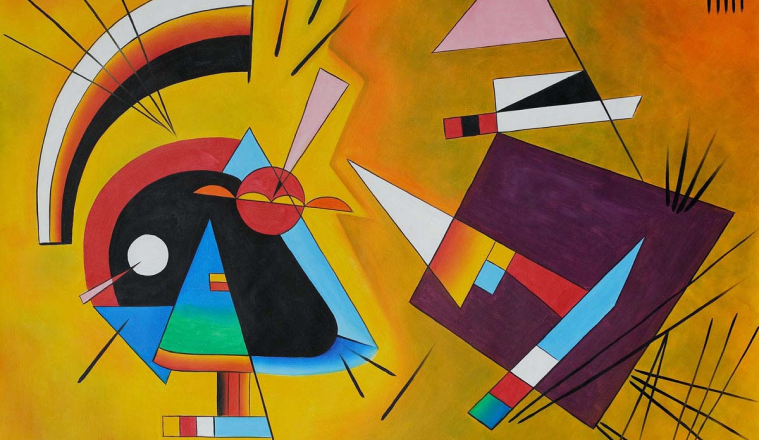

Картины, которые повторит даже 5-летний сын маминой подруги
Юрист — очень престижная профессия. Гордость семьи, сын маминой подруги. А юрист — профессор университета — вообще апогей. Полная противоположность свободного художника.
Так что, когда Василий Кандинский не согласился на место преподавателя Дерптского университета и уехал в Мюнхен учиться живописи — и это всё почти в тридцать лет, — многие решению, мягко говоря, удивились.
Удивление возросло, когда Кандинский отринул все известные на тот момент законы живописи и создал новый стиль — биоморфный абстракционизм.
Наш лот № 3 — полотна Василия Кандинского.
Вверху: Color Study. Squares with Concentric Circles, 1913
Внизу: Composition IX, 1936
Он, до этого писавший и импрессионистские пейзажи, и реалистичные полотна, создал собственный мир — мир цвета и формы. Такой подход — основа абстракционизма, но Кандинский пошёл ещё дальше.
В его работах не было привычных линий и композиций. Кандинского очень вдохновляла музыка, и эти картины будто стали её продолжением: они не двигались и там не было изображений живых существ, но вопреки этому они будто бы жили.
Такие работы были слишком новаторскими, чтобы их осмыслить. В 1937 году в Берлине они попали на выставку «дегенеративного искусства». Но сейчас, почти через сто лет, понятно, что для искусства, побывавшего на той выставке, это был знак качества, а не глупости.